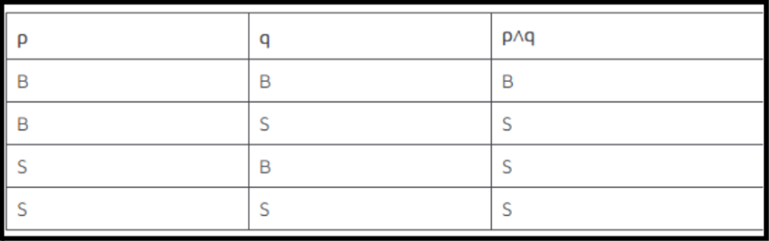
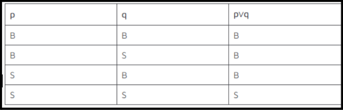
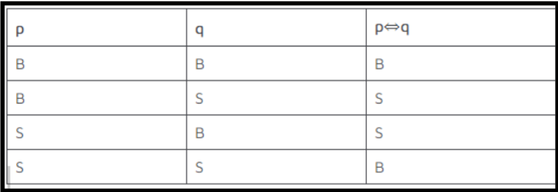

Logika Matematika
Materi
Logika matematika adalah cara berpikir atau bisa dikatakan sebagai landasan tentang bagaimana cara kita mengambil kesimpulan dari suatu keadaan atau kondisi tertentu. Secara umum, logika matematika dibagi menjadi dua, yaitu pernyataan dan penarikan kesimpulan.
- Pernyataan
- Ibukota Indonesia adalah Jakarta. (benar)
- Lamanya Bumi berotasi adalah 24 jam (benar)
- Teori gravitasi dikemukakan oleh Albert Einstein. (salah)
- Hasil penjumlahan 3 + 5 = 7. (salah)
- Pernyataan Tunggal
- Pernyataan: Ayah pergi ke kantor (p)
- Ingkaran: Ayah tidak pergi ke kantor (~p)
- Pernyataan: Ibu masak rendang (q)
- Ingkaran: Ibu tidak masak rendang (~q)
- Pernyataan: tomat bukan sayur (r)
- Ingkaran: tomat adalah sayur (~r)
- Pernyataan Majemuk
- Konjungsi
- p = Feri makan nasi
- q = Feri makan bakso
- p ∧ q = Feri makan nasi dan bakso
- p ∧ q = Feri makan nasi dan bakso. (konjungsi)
- ~(p ∧ q) ≡ ~p ~q = Feri tidak makan nasi atau bakso. (ingkaran konjungsi)
- Disjungsi
- p = Julia bekerja di Pasar Baru.
- q = Julia hobi bermain basket.
- p v q = Julia bekerja di Pasar Baru atau hobi bermain basket.
- p vq = Julia bekerja di Pasar Baru atau hobi bermain basket. (disjungsi)
- ~(p v q) ≡ ~p ∧ ~q = Julia tidak bekerja di pasar dan tidak hobi bermain basket. (ingkaran disjungsi).
- Implikasi
- p = Ani makan bakso.
- q = Jeni akan datang ke rumah.
- p => q = Jika Ani makan bakso, maka Jeni akan datang ke rumah.
- p => q = Jika Ani makan bakso, maka Jeni akan datang ke rumah. (implikasi).
- ~(p => q) ≡ p ∧ ~q = Ani makan bakso dan Jeni tidak datang ke rumah. (ingkaran implikasi).
- Biimplikasi
- p = Gilang akan mendapatkan hadiah.
- q = Gilang menjadi juara kelas.
- p ⬄ q = Gilang akan mendapatkan hadiah jika dan hanya jika menjadi juara kelas.
- p ⬄ q = Gilang akan mendapatkan hadiah jika dan hanya jika menjadi juara kelas.
- ~(p <=> q) ≡ (p ∧ ~q) v (q ∧ ~p) = Gilang akan mendapatkan hadiah dan tidak menjadi juara kelas atau Gilang menjadi juara kelas dan tidak akan mendapatkan hadiah.
Pernyataan adalah suatu kalimat yang bisa dibuktikan kebenarannya. Artinya pernyataan hanya memuat satu nilai kebenaran, benar saja atau salah saja. Kedua nilai kebenaran itu tidak bisa melekat secara bersamaan pada suatu pernyataan. Adapun contoh pernyataan adalah sebagai berikut:
Pernyataan dibagi menjadi 2, yaitu pernyataan tunggal dan majemuk.
Pernyataan tunggal adalah pernyataan yang bisa berdiri sendiri, sehingga tidak dibutuhkan tanda hubung. Secara matematis, pernyataan bisa dinyatakan sebagai p atau q. Contoh pernyataan tunggal “Ayah pergi ke kantor (p)”, “Ibu masak rendang (q)”, “Adik berangkat sekolah (r)”, dan sebagainya.
Ingakaran
Selain pernyataan, ternyata juga ada ingkaran pernyataan. Ingkaran adalah pernyataan yang memiliki nilai kebenaran berlawanan dengan pernyataan semula. Contoh ingkaran adalah ~p. Contohnya kalimat ingkaran adalah sebagai berikut.
Berikut ini tabel kebenaran untuk ingkaran

Pernyataan majemuk adalah gabungan dari beberapa pernyataan tunggal melalui tanda hubung. Contoh pernyataan majemuk adalah “Jika ayah ke kantor, ibu masak rendang”, “Adik bermain sepak bola dan kasti”, dan sebagainya. Pernyataan majemuk dibagi menjadi empat jenis, yaitu konjungsi, disjungsi, implikasi, dan biimplikasi. Apa perbedaan antara keempatnya?
Berikut ini tabel kebenaran untuk ingkaran
Konjungsi adalah gabungan antara dua atau lebih pernyataan tunggal melalui tanda hubung “dan”. Secara matematis, konjungsi dilambangkan sebagai (p ∧ q). Perhatikan contoh konjungsi berikut.
Konjungsi hanya akan bernilai benar jika kedua pernyataan benar. Jika penasaran, berikut ini adalah tabel kebenaran konjungsi.
Jika hasil konjungsi “Feri makan nasi dan bakso” dibuat ingkarannya, akan menjadi seperti berikut:
Disjungsi adalah gabungan dari dua atau lebih pernyataan tunggal melalui tanda hubung “atau”. Secara matematis, disjungsi dinyatakan sebagai (p v q). Perhatikan contoh disjungsi berikut:
Disjungsi akan bernilai benar jika salah satu atau kedua pernyataan benar. Adapun tabel kebenaran disjungsi adalah sebagai berikut:
Dengan demikian, ingkaran disjungsi “Julia bekerja di Pasar Baru atau hobi bermain basket” adalah sebagai berikut.
Implikasi adalah gabungan dari dua pernyataan sebagai hubungan sebab akibat. Implikasi ditandai dengan “jika …, maka …” dan biasa dinyatakan sebagai p =>q. Perhatikan contoh implikasi berikut:
Dengan demikian, ingkaran dari hasil implikasi “Jika Ani makan bakso, maka Ani tidak makan di rumah” adalah sebagai berikut.
Biimplikasi adalah gabungan antara dua pernyataan yang dihubungkan dengan “… jika dan hanya jika …”. Biimplikasi biasa dinyatakan sebagai (p ⬄ q). Untuk lebih jelasnya, simak contoh biimplikasi berikut:
Biimplikasi akan bernilai benar jika kedua pernyataan sama-sama benar atau sama-sama salah. Perhatikan tabel kebenaran berikut.
Dengan demikian, ingkaran dari biimplikasi “Gilang akan mendapatkan hadiah jika dan hanya jika menjadi juara kelas” adalah sebagai berikut: